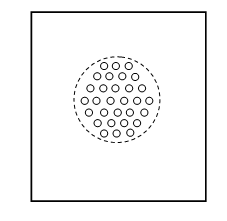

8.1.1 Резонансные звукопоглотители
Одним из наиболее перспективных видов звукопоглощающих конструкций являются конструкции резонансного типа или резонансные звукопоглотители (РЗП). Такие поглотители просты в изготовлении, экономичны и, что самое важное, могут обеспечить хорошее звукопоглощение на средних и низких частотах, где обычные поглотители из пористых материалов малоэффективны. Кроме того, существует хорошо разработанная и сравнительно несложная методика расчета их акустических характеристик. В данном разделе рассматриваются следующие вопросы:
- конструкция простейшего РЗП,
- физические процессы, происходящие в РЗП под действием звуковой волны,
- механизм поглощения энергии звуковых колебаний,
- метод расчета акустического импеданса и коэффициента звукопоглощения (КЗП),
- влияние основных параметров РЗП на резонансную частоту и КЗП,
- возможности усовершенствования конструкции РЗП (зональные РЗП, РЗП с дифракционным экраном),
- области возможного применения РЗП.
Основные характеристики резонансных звукопоглотителей и методы их расчета
Простейший резонансный звукопоглотитель представляет собой панель, перфорированную отверстиями, расположенную на некотором расстоянии от жёсткой стенки. Пространство за панелью может быть разделено перегородками на отдельные отсеки (см. рисунок). Впервые поглотитель такого типа был предложен советским акустиком С.Н. Ржевкиным еще в 1938 году.
Рассматриваемая конструкция представляет собой колебательную систему, в которой роль упругого элемента играет воздух, заполняющий пространство за панелью, а в качестве инерционного элемента выступают воздушные пробки, заполняющие отверстия панели. При приближении частоты звуковой волны, падающей на лицевую поверхность звукопоглотителя, к собственной частоте резонатора скорость движения воздуха в отверстиях панели резко возрастает. При этом увеличиваются потери звуковой энергии, обусловленные действием сил вязкого трения.
Резонансный звукопоглотитель
Акустические свойства РЗП характеризуются входным импедансом Z и коэффициентом звукопоглощения a. Входной импеданс поверхности звукопоглотителя равен, по определению, отношению звукового давления к нормальной составляющей колебательной скорости и, в общем случае, является комплексной величиной:
Обычно используют так называемый безразмерный или нормированный импеданс:
,
где r0с –волновое сопротивление среды. Для воздуха при нормальных условиях r0с = 420 кг/(м2×с) (ρ0 = 1,27 кг/м3, с = 330 м/с).
Коэффициент звукопоглощения РЗП равен:
Для получения максимального коэффициента поглощения (a = 1) необходимо, чтобы входной импеданс поверхности звукопоглотителя был согласован с волновым сопротивлением среды. В случае нормального падения плоской звуковой волны на поверхность поглотителя условие согласования имеет вид:
R1 = 1, Y1 = 0.
С физической точки зрения рассмотрение процесса отражения звуковых волн от РЗП сводится к решению задачи о дифракции звука на периодической неоднородной поверхности (лицевой панели РЗП) с учётом вынужденных колебаний слабо диссипативной среды (воздуха) в объёме поглотителя (за панелью).Значение действительной (активной) составляющей импеданса R1 определяется диссипацией энергии звуковой волны в поглотителе, однако механизмы диссипации могут быть различными.Если считать, что основные потери энергии связаны с действием вязкости и теплопроводности при движении воздуха в отверстиях панели, то для расчёта импеданса отверстия можно использовать формулу Крендалла для импеданса трубы:
Если считать, что основные потери энергии связаны с
действием вязкости и теплопроводности при движении воздуха в отверстиях панели,
то для расчёта импеданса отверстия можно использовать
формулу Крендалла для импеданса трубы:

где –
волновое число вязкой волны, m=2×10-5 Па×с – коэффициент вязкости воздуха (если материал панели
обладает высокой теплопроводностью, то следует использовать увеличенное значение
коэффициента вязкости m′= 2m), w=2pf - циклическая частота колебаний в
звуковой волне, r0 –
радиус
отверстия, t –
толщина панели, 2d - концевые поправки, учитывающие
дифракционные эффекты.
При kвr0 >> 1 формула переходит в формулу Гельмгольца:
Используя эту формулу, получаем для безразмерного удельного активного импеданса РЗП выражение
где h - коэффициент перфорации лицевой
панели, равный отношению площади отверстия So = pd2/4 к площади
квадратной ячейки, приходящейся на одно
отверстие, S = a2.
Для расчета концевой правки при ro/ ≤ 0,2 используется формула:
где d = 2ro -
диаметр отверстия.
Из полученного выражения видно,
что R1 растет при
увеличении толщины панели и уменьшении отверстий.
Мнимая (реактивная) составляющая импеданса Y1 определяется упругостью воздуха в объеме РЗП и инерционностью воздуха, колеблющегося в окрестности отверстий перфорированной панели:

где l –
глубина полости РЗП (расстояние от внутренней поверхности панели до жесткой
стенки).
При резонансе
(f = f рез) Y1 = 0
и коэффициент звукопоглощения (КЗП) системы α достигает максимального
значения.
Для определения резонансной
частоты fрез следует решить
уравнение:
В
общем случае это уравнение требует численного решения, однако при условии,
что длина звуковой
волны l >> l (или 2pfl/c << 1),
можно считать
Таким образом:
и
Из полученной формулы видно, что резонансная частота
снижается при увеличении глубины полости
поглотителя l.
Для построения частотной зависимости коэффициента
звукопоглощения РЗП следует определить его резонансную частоту и найти
значения R1, Y1 и α
при f = fрез, а затем
рассчитать R1, Y1и
α для 10-15 значений частоты из интервала
.
Типичный вид зависимости α(f) приведен на
рисунке:
Кривая звукопоглощения резонансного
звукопоглотителя
Использование РЗП для снижения уровня
шума
Как следует из изложенного выше, основной областью
использования РЗП является глушение так называемого тонального шума. Варьируя
геометрические параметры РЗП, можно добиться того, чтобы резонансная частота
поглотителя совпадала с основной частотой звука, падающего на его поверхность.
При этом достигается высокие значения КЗП и, следовательно, значительное
снижение уровня звука при отражении от поверхности РЗП.
Одним из основных недостатков классической конструкции
РЗП является невозможность его использования для глушения широкополосного
шума.
С целью преодоления данного недостатка С.Н. Ржевкиным была предложена многослойная
конструкция РЗП, представляющая собой несколько последовательно соединенных
резонансных ячеек с различными геометрическими параметрами. Как показали
дальнейшие исследования, многослойные РЗП характеризуются более широкой
частотной характеристикой.
В качестве еще одной меры расширения кривой поглощения РЗП было предложено вместо каждого из отверстий в панели размещать группу симметричного расположения отверстий малого диаметра (зону). Такой звукопоглотитель получил название зонального РЗП (см. рисунок).

Движение воздуха в отверстиях малого диаметра приводит к
увеличению диссипативных потерь и, следовательно, к расширению кривой
поглощения. Кроме того, изменение размеров зоны и отдельных отверстий дает
возможность варьировать акустические характеристики
поглотителя.
Еще одна конструкция с расширенной областью
звукопоглощения – это так называемый звукопоглотитель со складчатым
заполнителем. В таком РЗП за лицевой панелью размещается складчатая конструкция,
которая представляет собой ряд зигзагов, чередующихся впадинами и вершинами,
получаемая путем сгибания относительно тонкого листового материала по
определенной технологии, с разработанной математической моделью связей
геометрических параметров. Фактически при этом по определенному закону меняется
глубина полости резонаторов, что приводит к эффективному поглощению звука в
более широкой полосе частот.
Основная трудность создания звукопоглотителей для
низкочастотного диапазона связана с крайне малым затуханием низкочастотного
звука как в воздухе, так и в традиционных поглощающих материалах. Поэтому
обычные низкочастотные поглотители весьма громоздки, в то время как РЗП
позволяют получить сильное звукопоглощение при сравнительно малом объеме
конструкций, хотя и в более узком частотном диапазоне.
Для снижения резонансной частоты поглотителя без
чрезмерного увеличения глубины
полости l необходимо увеличить
положительную часть реактивной составляющей
импеданса Y1, связанную с колебаниями
воздуха в окрестности панели. Такая возможность реализуется в РЗП с
дифракционным экраном. Дифракционный экран представляет собой круглую пластину
радиусаR (R > ro), закрепленную на некотором
расстоянии lо за отверстием
параллельно плоскости лицевой панели РЗП (см. рисунок).
Изменение lо сильно
влияет на
величину Y1 вследствие
процессов дифракции. Кроме того, дополнительные вязкие потери, возникающие при
движении воздуха в зазоре между лицевой панелью и экраном, приводят к увеличению
активной составляющей
импеданса R1.
В развитие этой же идеи был предложен
еще один тип РЗП, в котором дифракционный экран располагается за зоной
симметрично расположенных малых отверстий (зональный звукопоглотитель с
дифракционным экраном).
Расчеты и экспериментальные данные показывают, что РЗП с
дифракционным экраном является на данный момент наиболее перспективным средством
пассивного глушения низкочастотных и инфразвуковых шумов.
РЗП с дифракционным
экраном
Важной проблемой разработки РЗП для низкочастотного
диапазона является учет всех механизмов диссипации энергии звуковых колебаний.
Кроме поглощения энергии, связанного с вязкими и тепловыми потерями при движении
воздуха в отверстиях панели и в зазоре между панелью и дифракционным экраном, о
которых говорилось выше, в РЗП определенную роль играют еще два механизма
диссипации.
Один из них связан с влиянием вязкости и
теплопроводности воздуха, колеблющегося в полости РЗП. Как показывают расчеты,
на низких частотах это влияние может быть существенным.
Другой механизм, связанный с нелинейными процессами в
РЗП, также играет существенную роль на низких частотах и может привести к
заметному увеличению диссипативных потерь энергии звуковой волны и увеличению
коэффициента звукопоглощения.
В настоящее время резонансные звукопоглотители различных модификаций широко используются для снижения уровня шума авиационных и ракетных двигателей, а также в строительной акустике.